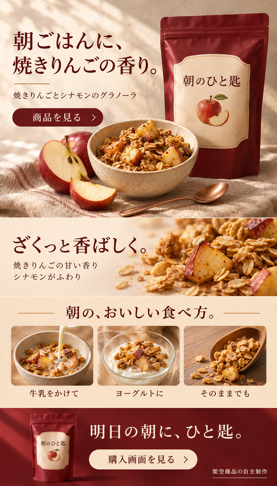

牛乳をかけて
冷たい牛乳を注いで、りんごの香りを楽しむ朝食に。

味と食感
最初に広がるのは、焼きりんごの甘い香り。ざくっとしたオーツをかむと、あとからシナモンがふわりと香ります。
冷たい牛乳を注いで、りんごの香りを楽しむ朝食に。
プレーンヨーグルトに重ねて、なめらかさと歯ごたえを一緒に。
小皿に出して、コーヒーのおともや小腹が空いたときに。
食べ方アレンジ
忙しい朝でも、器ひとつで。
パッケージデザイン
深い赤の袋に、生成りのラベルとりんごの絵。味がわかるモチーフを中央に置き、毎朝手に取る場面をイメージしました。再封できる袋を想定しています。
架空商品の企画例です。以下は表示見本です。
直射日光や高温多湿を避け、開封後は袋の口を閉じて早めにお召し上がりください。保存方法の記載例です。
味と内容量を確認します。
デモでは1〜5袋から選べます。
選んだ袋数と内容量を確認します。
そのままでも、ヨーグルトにのせても楽しめる商品を想定しています。
このページの商品情報に、想定の内容量と原材料の例を掲載しています。
ポートフォリオ用のデモです。数量を選んで確認画面を開けます。決済や配送は発生しません。
購入デモ
焼きりんごとシナモンのグラノーラ
1袋 200 gの想定。実際の購入は発生しません。